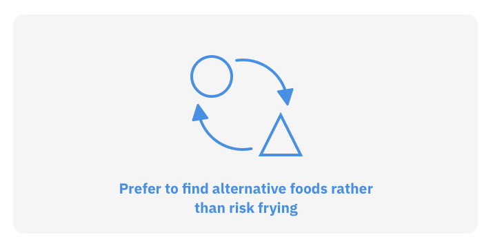
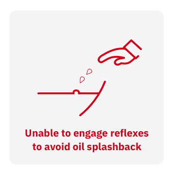

Published my work titled "Behaviors, Problems and Strategies of Visually Impaired Persons During Meal Preparation in the Indian Context : Challenges and Opportunities for Design" at ASSETS 2020 and presented it in the Student Research Competition. Placed 2nd in the Graduate Papers category.
ContextPreparing a meal is a basic activity needed for survival. It involves multiple senses giving feedback about different aspects of a meal's preparedness. Many of these feedbacks provided are visual and are highly dependent on sight. Research has shown that being able to prepare a meal independently can affect the quality of life of an individual [1]. There are also studies that reveal that there is a prevalence of lowered nutrition levels among Visually Impaired Persons (VIPs) due to their reduced ability to shop for and prepare meals independently [2]. Given this, it is imperative to delve deeper into problems plaguing the community in preparing meals and outline potential pathways to aid in kitchen independence.
Research Overview
The StudyThe study was conducted in two parts. The first round of primary research was conducted with 7 participants of varying levels of blindness and experience in the kitchen to understand broadly the specific nature of the problems they encounter. This helped gain a perspective of the area and eliminate many activities, primarily those that are mechanical in nature. The second round of semi-structured interviews was held with five participants. The decision to follow a semi-structured approach was taken to build rapport with the participants and to allow for the conversation to flow. The participant list is mentioned below. The questions in this round focused on four cooking techniques commonly used to prepare Indian dishes, namely, boiling, simmering, roasting and frying. The interviews were then transcribed and the discussion points were classified into three categories: behaviours, problems faced, and strategies. While behaviours were commonly observed across the group, strategies were specific to the user and their environment, potentially providing a framework for other individuals to adopt similar approaches. Participant list
FindingsThe findings are categorised into the cooking techniques of boiling, simmering, roasting and frying. A secondary level of categorisation is also done using colours. Problems are coded in red, behaviours in blue and strategies in green. BoilingBoiling is the process of cooking food in boiling water, or other water based liquids such as milk. This generally results in vegetables becoming soft and tender, and easy to chew.
SimmeringSimmering is a process in which foods are cooked in hot liquids just below their boiling temperature. This technique is used to prepare most Indian gravies.
RoastingRoasting is a technique that involves cooking food with dry heat with a small amount of cooking oil applied on the pan to prevent the food from sticking to it. Foods commonly prepared in this method are rotis, dosas, and processed meats.
FryingFrying is the process of cooking food in oil or any fat. There are many kinds of frying, but for the purpose of this discussion, frying shall refer to the act of deep frying, which involves immersing the food wholly in the oil/fat. Many foods are prepared using this technique, such as puris, vadas, pakodas, and other western dishes such as french fries, fried chicken etc.


Implications for DesignMany considerations need to be taken when developing solutions that lower the entry barrier to preparing meals independently.
ConclusionMore in depth study of the cooking techniques in various contexts and user environments is necessitated before designing and developing assistive devices. This is partly due the lack of work in the area. However, the lack of substantial research in this area gives scope for novel designs to surface and potentially make a large impact on the quality of life of the individuals. Links
References
Kostyra, Eliza, et al. "Food shopping, sensory determinants of food choice and meal preparation by impaired people. Obstacles and expectations in daily food experiences." Appetite 113 (2017): 14-22.
Lamoureux, E. L., Hassell, J. B., & Keeffe, J. E. (2004). The determinants of participation in activities of daily living in people with impaired vision. American journal of ophthalmology, 137(2), 265-270.